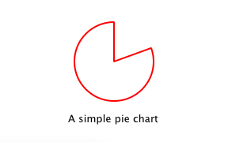

Chapter 1: Creating a New Type
A common task when extending QML is to provide a new QML type that supports some custom functionality beyond what is provided by the built-in QtQuick types. For example, this could be done to implement particular data models, or provide elements with custom painting and drawing capabilities, or access system features like network programming that are not accessible through built-in QML features.
In this tutorial, we will show how to use the C++ classes in the Qt Declarative module to extend QML. The end result will be a simple Pie Chart display implemented by several custom QML types connected together through QML features like bindings and signals, and made available to the QML runtime through a plugin.
To begin with, let's create a new QML type called "PieChart" that has two properties: a name and a color. We will make it available in an importable type namespace called "Charts", with a version of 1.0.
We want this PieChart type to be usable from QML like this:
import Charts 1.0 PieChart { width: 100; height: 100 name: "A simple pie chart" color: "red" }
To do this, we need a C++ class that encapsulates this PieChart type and its two properties. Since QML makes extensive use of Qt's meta object system, this new class must:
- Inherit from QObject
- Declare its properties using the Q_PROPERTY macro
Here is our PieChart class, defined in piechart.h:
The class inherits from QQuickPaintedItem because we want to override QQuickPaintedItem::paint() in perform drawing operations with the QPainter API. If the class just represented some data type and was not an item that actually needed to be displayed, it could simply inherit from QObject. Or, if we want to extend the functionality of an existing QObject-based class, it could inherit from that class instead. Alternatively, if we want to create a visual item that doesn't need to perform drawing operations with the QPainter API, we can just subclass QQuickItem.
The PieChart class defines the two properties, name and color, with the Q_PROPERTY macro, and overrides QQuickPaintedItem::paint(). The class implementation in piechart.cpp simply sets and returns the m_name and m_color values as appropriate, and implements paint() to draw a simple pie chart. It also turns off the QGraphicsItem::ItemHasNoContents flag to enable painting:
...
Now that we have defined the PieChart type, we will use it from QML. The app.qml file creates a PieChart item and display the pie chart's details using a standard QML Text item:
Notice that although the color is specified as a string in QML, it is automatically converted to a QColor object for the PieChart color property. Automatic conversions are provided for various other basic types; for example, a string like "640x480" can be automatically converted to a QSize value.
We'll also create a C++ application that uses a QQuickView to run and display app.qml. The application must register the PieChart type using the qmlRegisterType() function, to allow it to be used from QML. If you don't register the type, app.qml won't be able to create a PieChart.
Here is the application main.cpp:
This call to qmlRegisterType() registers the PieChart type as a type called "PieChart", in a type namespace called "Charts", with a version of 1.0.
Lastly, we write a .pro project file that includes the files and the declarative library:
Now we can build and run the application:

Try it yourself with the code in Qt's examples/quick/tutorials/extending/chapter1-basics directory.